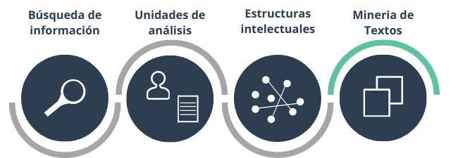
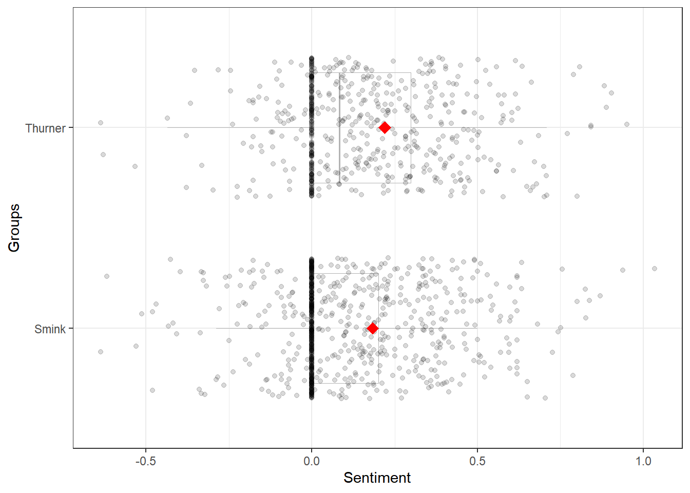
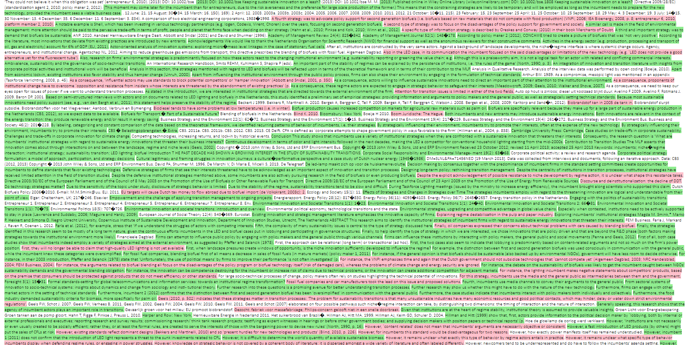
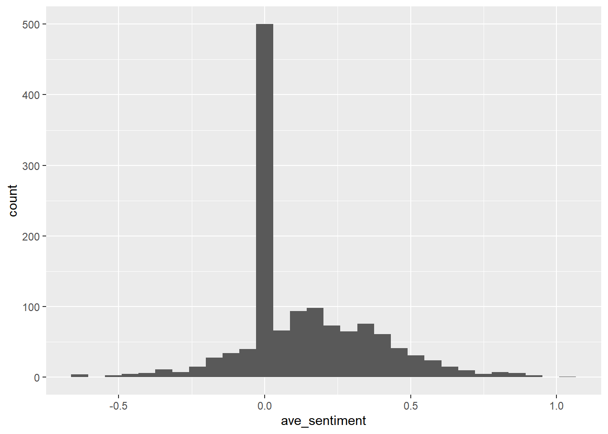

Este es un ejemplo de cómo aplicar el análisis de sentimientos a artículos científicos. El análisis de sentimiento se aplica a nivel de la oración. Asigna valores a las oraciones positivas y negativas y evalúa la magnitud del sentimiento en referencia con una base de palabras.
Como ejemplo se utilizarán dos artículos científicos.
e1 <- readtext(paste0(folder, "/*.txt"),
docvarsfrom = "filenames", dvsep = "_")
e2 <- as.data.frame(e1)Una vez se asigna un valor a cada oración dentro de los artículos, se puede visualizar mediante un boxplot donde cada punto representa una oración y la calificación de su sentimiento. Puntaje mayor a 0 representa sentimientos positivos y menor a 0 sentimientos negativos.
e3 <- get_sentences(e2)
colnames(e3)[4] <- "name"
e4 <- e3 %>% sentiment_by(by = c("name"))
plot(e4)
Otra manera de visualizar los resultados es resaltar dentro del texto los sentimiento positivos y negativos.

ggplot(e5, aes(ave_sentiment)) + geom_histogram()